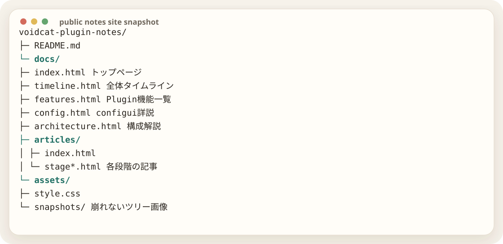

作業ログを、読み物として公開する
当初は1枚の記事ページだったが、作業量が増えたため、docs全体を作り直すことにした。トップ、構成解説、機能一覧、configui詳説、タイムライン、詳細記事、共有方針に分ける。

また、テキストのフォルダツリーはスマホで崩れやすかったため、SVGスナップショット化した。これならブラウザ幅が変わっても、ツリー構造は画像として保たれる。
作業者テキストツリーが崩れるから、スナップショット化したい
GPTSVG画像として出しましょう。見た目はフォルダツリーのまま、スマホでも改行崩れを避けられます。
公開用repoには、APIキーやログは入れない。読み物として必要な範囲だけを載せ、実装本体や秘密値はPrivate repoに残す。